Creates auditor_model_performance object that can be used to plot radar with ranking of models.
model_performance( object, score = c("mae", "mse", "rec", "rroc"), new_score = NULL, data = NULL, ... ) modelPerformance( object, score = c("mae", "mse", "rec", "rroc"), new_score = NULL )
| object | An object of class |
|---|---|
| score | Vector of score names to be calculated. Possible values: |
| new_score | A named list of functions that take one argument: object of class 'explainer' and return a numeric value. The measure calculated by the function should have the property that lower score value indicates better model. |
| data | New data that will be used to calcuate scores. Pass |
| ... | Other arguments dependent on the score list. |
An object of the class auditor_model_performance.
score_acc, score_auc, score_cooksdistance, score_dw,
score_f1, score_gini,
score_halfnormal, score_mae, score_mse,
score_peak, score_precision, score_r2,
score_rec, score_recall, score_rmse,
score_rroc, score_runs, score_specificity,
score_one_minus_acc, score_one_minus_auc, score_one_minus_f1,
score_one_minus_precision, score_one_minus_gini,
score_one_minus_recall, score_one_minus_specificity
library(DALEX) # fit a model model_glm <- glm(survived ~ ., family = binomial, data = titanic_imputed) # use DALEX package to wrap up a model into explainer exp_glm <- explain(model_glm, data = titanic_imputed, y = titanic_imputed$survived)#> Preparation of a new explainer is initiated #> -> model label : lm ( default ) #> -> data : 2207 rows 8 cols #> -> target variable : 2207 values #> -> model_info : package stats , ver. 4.0.0 , task classification ( default ) #> -> predict function : yhat.glm will be used ( default ) #> -> predicted values : numerical, min = 0.008128381 , mean = 0.3221568 , max = 0.9731431 #> -> residual function : difference between y and yhat ( default ) #> -> residuals : numerical, min = -0.9628583 , mean = -2.569729e-10 , max = 0.9663346 #> A new explainer has been created!#> Measures for: classification #> recall : 0.5738397 #> precision: 0.7472527 #> f1 : 0.6491647 #> accuracy : 0.8001812 #> auc : 0.8115114 #> #> Residuals: #> 0% 10% 20% 30% 40% 50% #> -0.96285832 -0.32240247 -0.23986439 -0.19544185 -0.14842925 -0.11460334 #> 60% 70% 80% 90% 100% #> -0.06940964 0.06185475 0.29607060 0.72120412 0.96633458plot(mp)